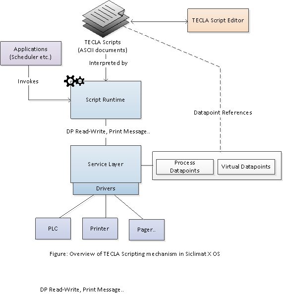
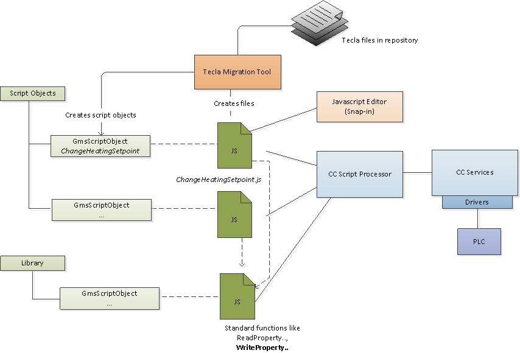
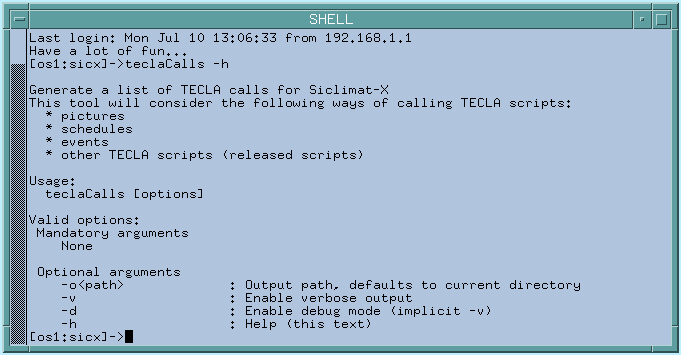

SICLIMAT X TECLA Scripts
SICLIMAT X OS is a legacy management station system which is used in conjunction with Simatic S7 PLC based sub-system. The management station offers an environment for scripted execution of programs, which are written using a proprietary language specification called TECLA (acronym for Technical Language). The scripts offer functionality to conduct actions such as read/write of data point attributes, printing of messages or file IO. Such scripts are used to carry out system-wide functions. The underlying script runtime interfaces with the SICLIMAT X OS services to conduct actions like read/write of data points.

Overview of the Migration Process
Desigo CC provides scripted execution of actions using JavaScript™ as the programming language. Apart from the standard functions and operators available in the language, additional functions, like for read/write of data points, have been added in the standard library. This enables the engineering user to write a control program in JavaScript™ while using library-provided functions. The following code snippet shows an example script:
var sp = BrowserObject("System1.ManagementView:..TemperatureSetpoint"); var value = read(sp,"PresentValue"); console.log(value); if(value < 22) var result= executePropertyCommand(sp,"PresentValoue", "Write","26");
if (result.error) { console.Log("Command failed); } |
Each such script document is stored in the Desigo CC project and represented as an instance of a data point. They provide the interface to start, stop, and monitor the status of the script execution. Consequently, these representative data points can be used in applications such as Macros and Reactions to invoke script execution.
Since there is a direct relationship between a TECLA Script document and an instance of JavaScript™ object inDesigo CC , we convert each TECLA Script document to a corresponding JavaScript™ file (with a representative data point object). The conversion process is carried out by a language cross-compiler which converts the language constructs (such as conditions, loops or operators) and replaces system service functions in TECLA (like data point read/write) with equivalents from the Desigo CC standard library. Since many system service functions in TECLA do have an equivalent in the standard library, the Siclimat Extension Module contains an additional JavaScript™ library which contains the equivalent functions. Not all functions in TECLA are possible in Desigo CC runtime. In case of a missing function equivalent a notification displays user during the migration process. Hence, it may be required to manually modify or extend the migrated TECLA script so that the missing parts can be worked around. The figure below depicts the overview of the relation between the TECLA scripts and the JavaScript™ objects in Desigo CC.

Key Considerations for TECLA Scripts Migration
Error Handling
The constructs of FWHILE and FWHEN that were designed to act as code parts dealing with error conditions are replaced with try/catch blocks. The original TECLA error codes are mapped to Desigo CC specific codes, which are listed in the appendix.
Multilingual Scripts
TECLA Scripts can be written using English or German syntax and function names. However, after migration, the JavaScript™ and its function calls are based on only English texts. The functions defined in the standard library are also based on English names.
Multi-System Projects
In a distributed system, data points exist within the containers of the respective systems. The migration tool needs to locate data points which are referred in the TECLA scripts. In order to do this in a multi-system project, the migration tool will go through all available systems and for each system, it will search the logical view and then the User View.
NOTE: These virtual objects (called Rechenwert) are searched only in Application View. If the migration tool is not able to locate the data point in any of these systems, it will log an error in the migration summary.
JavaScript™ Functions in the Siclimat EM Library
The library for SICLIMAT X contains numerous JavaScript™ functions that enable you to perform SICLIMAT X-specific actions like SetOperatingMode (Betriebsart). Such function calls may be used in extensions and new JavaScript™ code that you want to create.
Overriding of Data Point Property Values
If an object is in manual or hand mode, the writing of the default property will fail and the message will be logged to console and trace channel.
Calendar is not accessible in JavaScript™
Access to calendar entries, such as Special day, holiday or weekend, will not be supported in JavaScript.
Virtual object Creation
Prior to script migration, the user has to create a virtual object manually under Application View > Logics > Virtual Objects. However, if the virtual object was not created and the reference is not resolved in the migrated JavaScript™, the user can create it after the migration and drag the reference in the migrated JavaScript™. The name of the virtual object should start with a digit. Virtual objects must be created using four types: Analog(A), Multistate(M), Binary(B) and Unsigned(Z). If the virtual object has a user-defined name (for example, UserdefinedVirtualObject1) that does not follow the naming convention of the virtual object should be created and reference in script should be changed manually.
Examples (from SICLIMAT) of object models and virtual object names
GMS_Virtual_Analog | 1RWA0 | 1RWA100 |
GMS_Virtual_Multistate | 1RWM0 | 1RWM100 |
GMS_Virtual_Binary | 1RWB0 | 1RWB100 |
GMS_Virtual_Unsigned | 1RWZ0 | 1RWZ100 |
Examples for SET, SETOP, SWITCH, and SWITCHOP
SET / SOLL:
- Example Use: _script.SetProperty("System1.LogicalView:LogicalView.SomeObject", 2);
- Sets the Sollwert property of the object to a value. If the object is in Manual mode, it will not change the value of the property.
- In this example, it sets the value 2 to the Sollwert property of an object.
SETOP / SOLLBA:
- Example Use: _script.SetPropertyWithOperationalMode ("System1.LogicalView:LogicalView.SomeObject", 2 , 3);
- First, it sets the Betriebsart property of the object to a value. If the object is in Manual mode, it will not change the value of the property.
- Second, it sets the Sollwert property of the object to a value. If the object is in Manual mode, it will not change the value of the property.
- In this example, it sets the value 3 to the Betriebsart property and value 2 to the Sollwert property of an object.
SWITCH / SCHALTE:
- Example Use: _script.ExecuteSwitch ("System1.LogicalView:LogicalView.SomeObject", 2);
- Sets the Sollstufe property of the object to a value. If the object is in Manual mode, it will not change the value of the property.
- In this example, it sets the value 2 to the Sollstufe property of an object.
SWITCHOP / SCHALTEBA:
- Example Use: _script.ExecuteSwitchWithOperationalMode ("System1.LogicalView:LogicalView.SomeObject", 2 , 3);
- First, it sets the Betriebsart property of the object to a value. If the object is in Manual mode, it will not change the value of the property.
- Second, it sets the Sollstufe property of the object to a value. If the object is in Manual mode, it will not change the value of the property.
- In this example, it sets the value 3 to the Betriebsart property and the value 2 to the Sollstufe property of an object.
Matrix for Possible Properties of Objects for SET, SETOP, SWITCH, and SWITCHOP
Command | Object Type | Property |
|---|---|---|
SET | Sollwert, Stellbefehl | Sollwert |
Regler | Grundsollwert | |
OptStell | AktualSollwert | |
SETOP | Sollwert, Stellbefehl | Sollwert |
Regler | Grundsollwert | |
SWITCH | Schaltbefehl | Sollstufe |
OptSchalt | AktualSollstufe | |
SWITCHOP | Schaltbefehl | Sollstufe |
Resolving the Error Target not found for SET, SETOP, SWITCH, and SWITCHOP
In TeclaJavascript™ library for SET, SETOP, SWITCH, SWITCHOP fixed properties are used.
- SET / SETOP: Fixed Sollwert property is used.
- SWITCH / SWITCHOP: Fixed Sollstufe property is used.
However, while executing the Tecla script, these fixed properties can be missing in object due to different object type, which results in the error message Target not found being displayed. The user can define the required property explicitly by using “object/PropertyName” as shown in following example.
Example 1:
_script.SetProperty("System1.LogicalView:LogicalView.SomeObject", 3);
Output on console: Target not found
Reason:
The object SomeObject does not have the Sollwert property but the Grundsollwert property.
New implementation:
_script.SetProperty("System1.LogicalView:LogicalView.SomeObject/Grundsollwert", 3);
Example 2:
_script.ExecuteSwitch ("System1.LogicalView:LogicalView.SomeObject", 3);
Output on console: Target not found
Reason:
The object SomeObject does not have the Sollstufe property but the AktualSollstufe property.
New implementation:
_script. ExecuteSwitch("System1.LogicalView:LogicalView.SomeObject/AktualSollstufe", 3);
Example 3:
_script.SetProperty("System2.Logical2:Logical2Root.GiWi.DI_CC.CC_SEMINAR.KLIMA2.RF1_DRUCKREG.DRUCK_REGL", 180);
Output on console: Target not found
Reason:
The object “DRUCK_REGL” does not have the Sollwert property but the Grundsollwert property.
New implementation:
_script.SetProperty("System2.Logical2:Logical2Root.GiWi.DI_CC.CC_SEMINAR.KLIMA2.RF1_DRUCKREG.DRUCK_REGL/Grundsollwert", 180);
Appendix SICLIMAT X
Mapping of TECLA error code to Desigo CC specific codes
JavaScript Functions in the SICLIMAT Library
The following statement includes the library JavaScript file.
var _script = include("TeclaScriptLibrary.js" ,"BA_Software_Siclimat_Script_Migration_1");
Function Name EN Siclimat | Function Name | Purpose | Example use of the function |
| ReadProperty | Reading objects property and return value. | _script.ReadProperty("System1.LogicalView:LogicalView.SomeObject"); |
OPERATING_MODE | SetOperatingMode | Set operation mode of object. 0 - External 1 - Manual 2 - Automatic 3 - OS | _script.SetOperatingMode("System1.LogicalView:LogicalView. SomeObject", 3); |
SET | SetProperty | Set specific property value of an object to a value. | _script.SetProperty("System1.LogicalView:LogicalView.SomeObject", 3); |
SETOP | SetPropertyWithOperationalMode | Set operation mode of a object and Set specific property value of an object to a value. | _script.SetPropertyWithOperationalMode("System1.LogicalView:LogicalView. SomeObject", 3, 3); |
SWITCH | ExecuteSwitch | Switches the set level of an object to a different value. | _script.ExecuteSwitch("System1.LogicalView:LogicalView. SomeObject ", 3); |
SWITCHOP | ExecuteSwitchWithOperationalMode | Set operation mode of a object and Switches the set level of the object to different value. | _script.ExecuteSwitchWithOperationalMode("System1.LogicalView:LogicalView.SomeObject ", 3, 3); |
WAIT | Wait | Stop execution of a script for “HH:MM:SS” time. | _script.Wait("00:00:01"); |
WAIT_S | WaitForSeconds | Stop execution of a script for provided seconds. | var variable1 = 10; _script.WaitForSeconds(variable1); |
WAIT_M | WaitForMinutes | Stop execution of a script for provided minutes. | var variable1 = 10; _script.WaitForMinutes(variable1); |
Wait_V | Wait_V | Stop execution of a script for Time span time values are taken from local variables for hour, minutes and seconds | var variable1 = 01; _script.Wait_V(variable1, variable1, variable1); |
LIMIT | SetLimitPropertyValue | Changes a certain limit of an object | _script.SetLimitPropertyValue("System1.LogicalView:LogicalView.SomeObject/Limit Property ", 3); |
WRITE | WritePropertyValue | Direct change of object properties. | _script. WritePropertyValue("System1.LogicalView:LogicalView.SomeObject/Limit Property ", 3); |
COUNTER | SetCounter | Change the value of the counter object. | _script.SetCounter("System1.LogicalView:LogicalView. SomeObject", 3); |
CALCULATION_VALUE | SetCalculationValue | Changes the current value of a compute object | _script.SetCalculationValue("System1.LogicalView:LogicalView.006XTGA.E0.AS30.LICHT_LINIEN.09.SB/Iststufe", 10); |
LOG | GetLog | Get logarithmic value. | _script.GetLog(10); |
ROOT | GetRoot | Get root value. | _script.GetRoot(10); |
DEGSIN | GetDegSIN | Get SIN value in Degree | _script.GetDegSIN(10); |
DEGCOS | GetDegCOS | Get COS value in Degree | _script.GetDegCOS(10); |
DEGTAN | GetDegTAN | Get TAN value in Degree | _script.GetDegTAN(10); |
RADSIN | GetRadSIN | Get SIN value in Radian | _script.GetRadSIN(10); |
RADCOS | GetRadCOS | Get COS value in Radian | _script.GetRadCOS(10); |
RADTAN | GetRadTAN | Get TAN value in Radian | _script.GetRadTAN(10); |
TRUNC | Truncate | Truncate digits after decimal digit. Also round up negative floating number. | _script. Truncate (10.33); |
DAY | GetCurrentDay | Get value of a week day 1 to 7. | _script.GetCurrentDay() |
TIME | GetCurrentTime | Check time is in 24 hour format else print error. | _script.GetCurrentTime("6:00:00"); |
| GetTime | Get current time in 24 hour format “HH:MM:SS” | _script.GetTime( ); |
| GetDay | Provide different Date functions. e.g. Day : 1 – 31 Month: 1 – 12 Year: 1997 – 2025 Hour: 0 – 23 Minute: 0 – 59 Weekday: 1(Monday) - 7(Sunday) Day_of_year: 1 - 366 Week_of_year: 1 - 52 Minute_of_day: 0 - 1440 Daylight savings time: 0 or 1 leap year: 0 or 1 | _script.GetDay() _script.GetDay( "SATURDAY"); _script.GetDay( "day"); _script.GetDay( "month"); _script.GetDay( "year"); _script.GetDay( "hour"); _script.GetDay( "minute"); _script.GetDay( "weekday"); _script.GetDay( "day_of_year"); _script.GetDay( "week_of_year"); _script.GetDay( "minute_of_day"); _script.GetDay( " daylight_savings_time "); _script.GetDay( " leap_year"); _script.GetDay( " leap_year"); |
START | StartScript | Starts the execution of the script from same system. | _script.StartScript("SomeScriptName"); |
CANCEL | CancelScript | Stops the execution of the script from same system. | _script.CancelScript("SomeScriptName "); |
FUNCTION | CallFunction | Start Subroutine script execution of the script from same system. | var result =_script.CallFunction("SomeScriptName ", a, b); var result1 = result[0]; var result2 = result[1]; |
_ERROR | GetErrorCode | Get error code, In case of reading / writing failure of an object error code is set to the variable. (Currently return 0 or 1, 0 in case of no error and 1 in case of error). | _script.GetErrorCode(); |
Handling Missing Functions in the System in SICLIMAT X
Some functions which are not migrated in Desigo CC are replaced with dummy function call in migrated JavaScript. Following is the list of such functions and possible workaround.
Function Name EN Siclimat | Function Name as dummy | Purpose | Workaround (if any) |
TEXT | SET_TEXT | Output of plain text over the message route. |
|
PROTOCOL | SET_PROTOCOL | Output of an existing protocol on printers |
|
PRINTER_SHIFT | SET_PRINTER_SHIFT | Switch-over of the output of an open log from printer1 to printer2. |
|
RPRINTER_SHIFT | SET_RPRINTER_SHIFT | Withdraws the switch-over of the output of an open log from |
|
PRINTER_ADD_ON | SET_PRINTER_ADD_ON | Switches the output of an open log from printer1 additionally |
|
RPRINTER_ADD_ON | SET_RPRINTER_ADD_ON | Withdraws the output of an open log on printer1 and on printer2. |
|
PRINTER_LOCK | SET_PRINTER_LOCK | Locks the output of an open log. |
|
RPRINTER_LOCK | SET_RPRINTER_LOCK | Withdraws the printer lock for the output of an open log. |
|
MACRO_SYSTEM | SET_MACRO_SYSTEM | Initiates an arbitrary UNIX system command. |
|
MAKROSYSTEM | SET_MAKROSYSTEM | Initiates an arbitrary UNIX system command. |
|
MACRO_SYSTEM_W | SET_MACRO_SYSTEM_W | Initiates an arbitrary UNIX system command. |
|
SET_SCHREIBE_VAR | SET_SCHREIBE_VAR | Write data point values to file. |
|
SET_LESE_VAR | SET_LESE_VAR | Read data point values from file. |
|
SETHEATING | SET_HEATING | Sets the mode of heating control. | Replace with equivalent data point writes. |
SETCHILLING | SET_CHILLING | Sets the mode of Chilling control. | Replace with equivalent data point writes. |
OPMODE | SET_OPMODE | Changes Operating mode of the object. | Replace with equivalent data point writes or Use function “SetOperatingMode” from Tecla JavaScript library. |
OSWITCH | SET_OSWITCH | Similar to the SWITCH command. Additionally, the monitoring of the consumer is initiated via the Energy management program. | Replace with equivalent data point writes. |
PHASE | SET_PHASE | Sets the phase flag of an object |
|
DCOS | SET_DCOS | Changes the DCOS flag of an object. |
|
SWITCH_OFF | SET_SWITCH_OFF | Changes the switch-off flag of an object |
|
BUFFER | SET_BUFFER | N/A |
|
RECOVER | SET_RECOVER | Coordinates the "recovery" of a TECLA command. |
|
GLOBAL | SET_GLOBAL | N/A |
|
PRINTER | SET_PRINTER | N/A |
|
EVENT | SET_EVENT | N/A |
|
AWAIT | SET_AWAIT | N/A |
|
TCC | SET_TCC | N/A |
|
MACRO_T | SET_MACRO_T | N/A |
|
CLASS | SET_CLASS | N/A |
|
TOWARD | SET_TOWARD | N/A |
|
TO | SET_TO | N/A |
|
ZLOG | GetZLOG | N/A | Use logarithmic functions provided by scripting |
ZSIN | GetZSIN | N/A | Use logarithmic functions provided by scripting |
ZCOS | GetZCOS | N/A | Use logarithmic functions provided by scripting |
ZTAN | GetZTAN | N/A | Use logarithmic functions provided by scripting |
TECLA Calls
- Service Pack 501 is successfully installed.
- Log on to the console as the sicx user.
- Run the teclaCalls script.
This will compile a list of which TECLA scripts are called within Siclimat-X and where they are called. This includes calling scripts from:
a. Schedules
b. Events
c. Pictures
d. Scripts
NOTE: A full list of options can be displayed with teclaCalls –h.

- The list of TECLA calls done in Siclimat-X is created in the current working directory or optional given output directory with the filename scriptCalls.csv.
- The list contains comma-separated values and can be imported into Microsoft Excel.